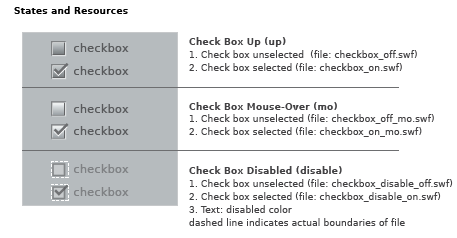

example
LZX Reference
filename: checkbox.lzx
The default check box has a height and width of 15 pixels. The check box is a scalable vector resource which enables proportional resizing without distortion. Disproportional scaling will result in an odd check mark.
All resources in check box (including disabled state) have the same exterior dimensions. Resources which appear to be smaller contain invisible rectangles that surround the visible art. This ensures the resource frames automatically register with one another, and will not need to be repositioned in code.
Check box is constructed as single resources for the various states. The placement of associated text has been defined to compliment the default size. Text is left-aligned and set to the right of the button. The disabled state, although visually smaller, has the same dimensions as the enabled versions. A transparent rectangle (indicated by white dashed line) insures alignment when a check box changes state.
